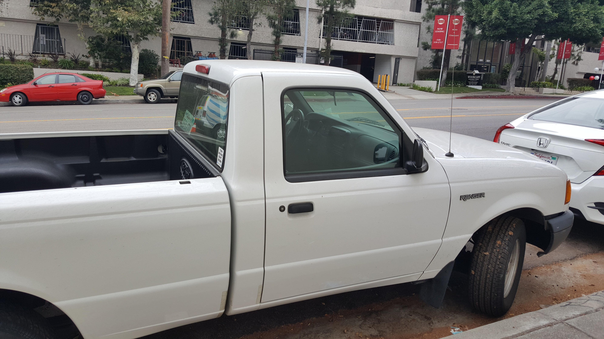
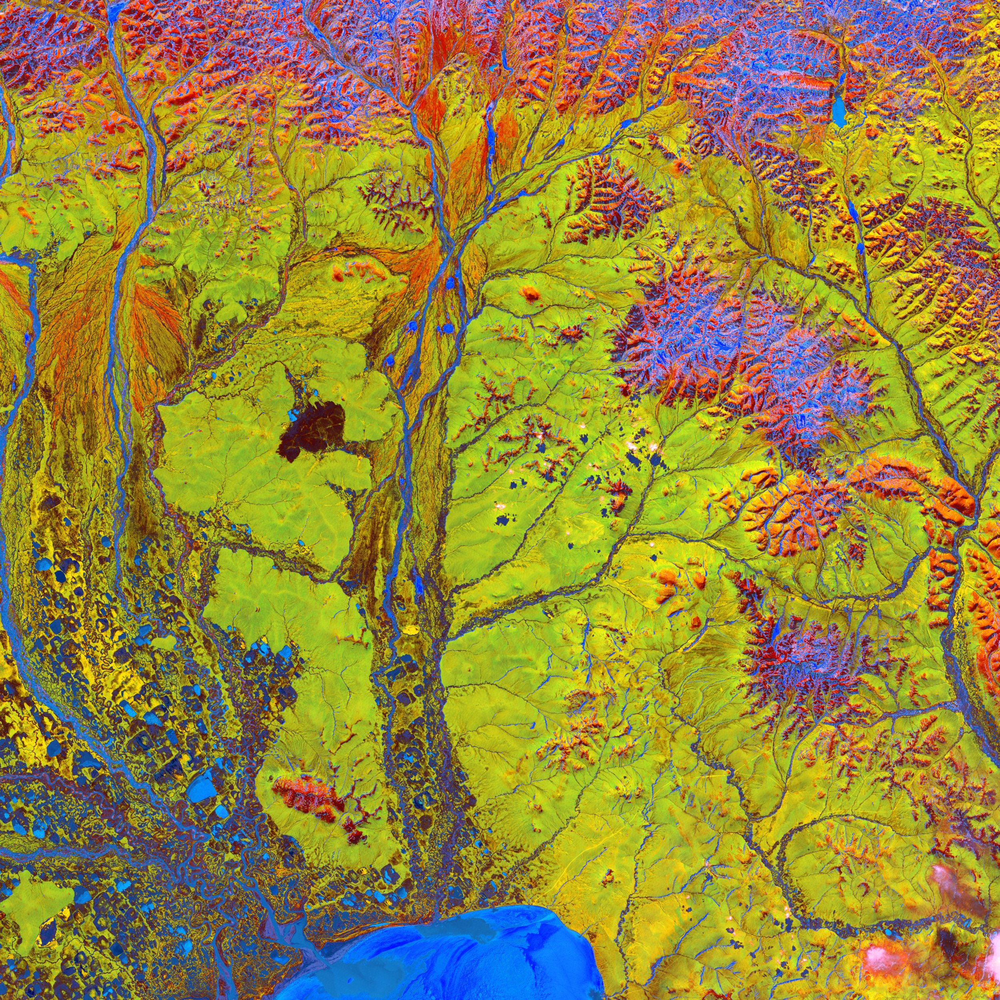
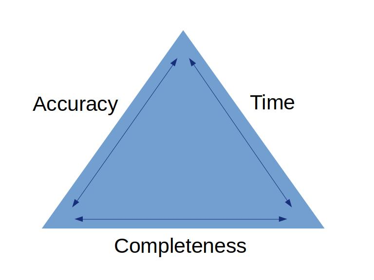

Integrating GIS with
non-GIS software
Follow Along
We'll cover:
- Why?
- How?
- An example
Why?
GIS is not a thing unto itself
Photo by Shlomo Shalev on Unsplash
It supports other fields which have their own tools.
- Engineering: AutoCAD, MicroStation, Revit
- Sciences: R, MATLAB, SPSS
- Government: Tyler Suite (Munis, Socrata, New World)
Sharing is our strength
Photo by DISRUPTIVO on Unsplash
There is job security in adaptability. You can do spatial analysis with or without GIS software. Our job is to understand the problem and offer the best solution based on all variables.
Blackboxing may be efficient, but it won’t help implement the solution.
Photo by Thorn Yang on Pexels
“All should keep in mind a balance between efficiency and involvement. ... it is worth losing efficiency to gain involvement. No one can do it all. A job worth doing is a job worth sharing."
Involvement = Ownership & Understanding
Ownership & Understanding increases the likelihood of your data, analyses, and maps being used.
Photo by Lukas on Pexels
How?
Talk to people.
- What do they need?
- Who will use it?
- What do they already have?
Structure your data for flexibility.
Photo by Patricia Valério on Unsplash
Field names shouldn’t change, but don’t create applications or scripts that rely on your data having a set schema.
You should be able to add and remove fields, layers, and tables.

Use a real relational database (SQL, Oracle, PostgreSQL).

Learn SQL and use it.
- Dive in fast: W3 Schools
- Coder learning new language: Code Academy
- Total beginner: Khan Academy
Be open to change.
Share responsibility (let others help maintain data).
Photo by Daria Obymaha on Pexels
Accept compromise.
Photo by USGS on Unsplash
Compromise: prioritize based on need.
Compromise: agree upon data goals and document your processes.
Photo by Christina Morillo on Pexels
An example
Asset Management system
- Locational data in GIS
- Asset history and attributes in Infor
Change management!

Photo by Burst on Pexels
Technical work can be automated and outsourced, leading people cannot.
Steps:
- Define a single source of truth
- Document your schema
- Automate syncing
Step 1: Define single source of truth.
The same layer (e.g. sewer mains) can have multiple sources as long as each field is only maintained in one place.
Step 1: Define single source of truth.
Talk to everyone involved and define roles clearly.
Step 1: Define single source of truth.
Most of the work is in defining the process.

Photo by Kaleidico on Unsplash
Step 2: Document your schema.
Living document: update this any time anything changes.
Step 2: Document your schema.
Table names, field names, and types.
Step 2: Document your schema.
Change!
- Set up an archival process and adapt.
- If no one is updating a field delete it!
- If a layer is so old it would actually be a hindrance to use in the field, delete it!
Step 2: Document your schema.
Don't sweat change.
You can always refer to the archive for historic purposes or resurrect if you misunderstood.
Step 3: Automate syncing.
While data is only ever updated in one place, you probably need to see it in multiple places:
- GIS
- web map
- software you are integrating with
Step 3: Automate syncing.
Depending on the software, maybe you can get away with no duplication (the ideal!) and share databases.
If not, don’t despair, just eliminate issues by syncing often.
Step 3: Automate syncing.
Python or FME are great choices along with your server’s task scheduler
In Summary:
Be open to adapting. We succeed when folks make use of our data, maps, and analyses (even if it messes up our ideal setup).